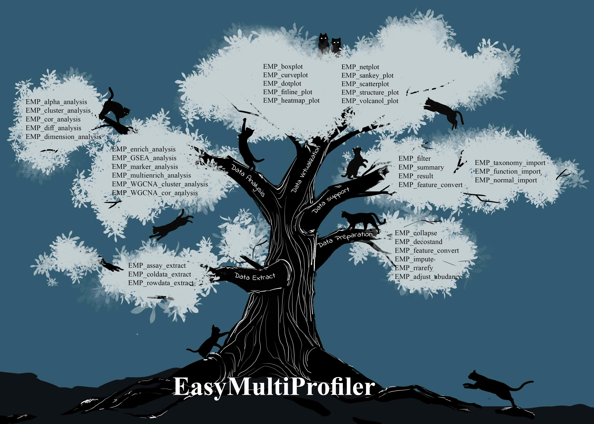

EasyMultiProfiler教程
2024-07
EasyMultiProfiler 包致力于为 R 平台用户提供一个简便且高效的多组学数据分析工具。该包专门设计用于支持微生物组、基因组和代谢物的下游分析任务，旨在通过优化工作流程来提升分析效率。EasyMultiProfiler 提供了全面的功能，从数据导入、处理到结果可视化，涵盖了多组学数据分析的各个环节，确保用户能够顺畅地完成复杂的分析过程。无论是科研人员还是临床医师，EasyMultiProfiler 都能为其提供直观的操作界面和强大的分析能力，帮助他们更好地解读多组学数据，挖掘潜在的生物学信息。
